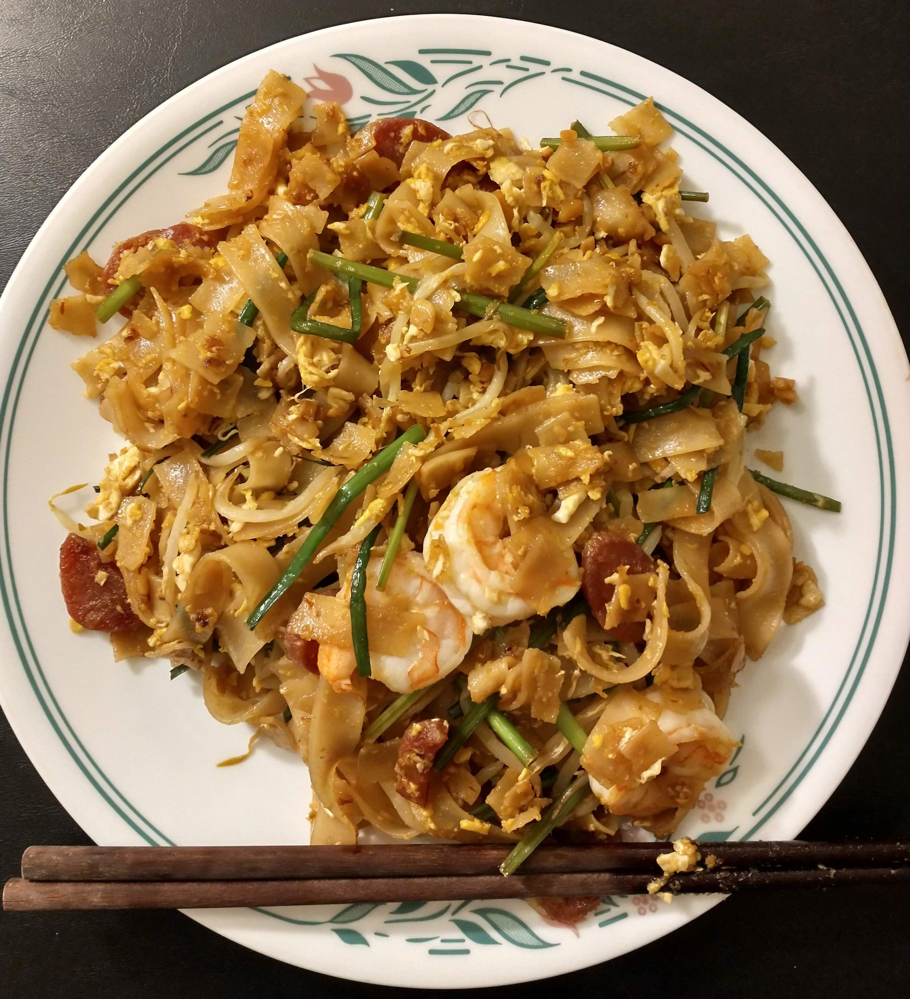

Char Koay Teow

Description
Char koay teow is a popular Malaysian dish made of flat rice noodles stir-fried
with shrimp, Chinese sausage, eggs, chives and bean sprouts in a mix of soy sauces.
For seafood lovers, cockles and squid are sometimes added too. Penang, a northern
state of Malaysia, is particularly well-known for this dish. An important quality of
a good char koay teow is the charred flavor it acquires from being fried over
very high heat in a well-seasoned Chinese wok.
Ingredients
Yield: 4 people
Chili paste
- 1 oz. dried red chilies seeded, soaked in water
- 2 fresh red chilies seeded
- 3 small shallots peeled and sliced
- 1 teaspoon oil
- 1 pinch salt
Sauce
- 5 tablespoons soy sauce
- 1 1/2 tablespoons dark soy sauce
- 1 tablespoon sugar
- 1/2 teaspoon fish sauce
- 1/2 teaspoon salt
- 2 dashes ground pepper powder
Other ingredients
- 3 cloves garlic minced
- 12 peeled shrimps
- 1 lb flat rice noodles
- 2 Chinese sausages sliced diagonally
- 1 bunch fresh bean sprouts rinsed with cold water and drained
- 4 large eggs
- 1 bunch Chinese chives cut into 2-inch sections
- 4 tablespoons oil/lard
Steps
-
Blend all ingredients of the chili paste in a food blender.
Heat up the wok with 1 teaspoon oil and stir-fry the chili paste until aromatic.
Dish out and set aside.
-
Rinse the wok thoroughly and heat it over high flame until smoke starts to appear.
Add 2 tablespoons oil/lard and half the portion of minced garlic into the wok
and do a quick stir.
-
Transfer 6 shrimps and half the sausage slices into the wok. Make a few quick stirs
until the shrimps start to change color and the aroma of Chinese sausages start to
permeate through the air.
-
Add half the bean sprouts into the wok.
-
Add half the portion of the flat rice noodles into the wok immediately.
-
Add 2 1/2 tablespoons of the sauce into the wok and stir vigorously to blend well.
Push the noodles to one side and add a little oil in an empty area of the wok and
crack an egg on it. Break the egg yolk and stir to blend with the egg white.
Flip the noodles over the egg and wait for 15 seconds.
-
Add 1/2 tablespoon chili paste (add more if you like it spicier) into the wok.
-
Continue to stir-fry and make sure that the egg is cooked through. Add chives
and do a couple of quick stirs. Dish out and serve immediately.
-
Repeat the steps above for the other half of the ingredients. Note that the
sequence of steps is crucial in ensuring the highest
quality. Moreover, a great plate of char koay teow should be medium brown
in color and not overly dark with dark soy sauce.